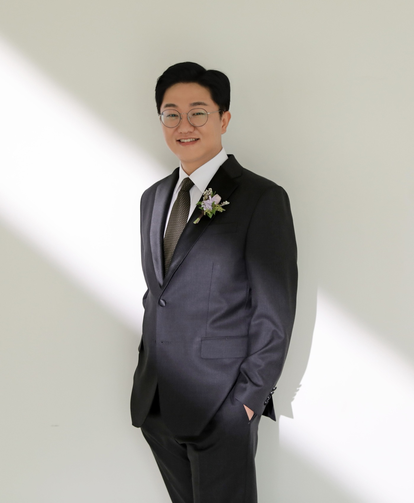

Software Engineer — Android · Cross-platform · AI Agent Platform
강지환Jihwan Kang
프리로드 뮤직 플레이어에서 Agent OS까지 — 기능 개발과 개발 흐름 개선을 함께해 온 15년의 기록.

Prologue — 서문
2011년부터 Android Application을 개발해왔습니다. Native(Kotlin/Compose)와 Cross-platform(React Native) 개발부터 CI/CD 인프라, AI 자동화 커맨드까지 — 기능 개발과 개발 흐름 개선을 함께하는 개발자입니다.
AI, Mobility, E-commerce, Multimedia 등 다양한 도메인을 경험했고, JAVA로 시작해 Kotlin 중심으로, 최근에는 TypeScript(React Native)와 Go(백엔드 플랫폼)까지 스택을 넓히고 있습니다. 현재보다는 미래를 위한, 다른 사람도 이해하기 쉬운 코드를 만드는 것을 좋아합니다.
2011 — 2015
Mobile & Music
Pantech 전임연구원 · LG Electronics 인턴
커리어는 LG전자 인턴으로 Blu-ray player 디바이스 SW의 텍스트 UI를 C로 개발하며 시작됐습니다. 2011년 Pantech에 합류해서는 Android 디바이스에 preload되는 Music Player를 맡아 Media Provider Framework를 분석하고 Music DB와 앨범아트 캐시 구조를 다뤘으며, 국내 전 모델과 일본·베트남·대만 수출 모델에 앱을 실으며 Android 2.2부터 5.0까지의 OS 업그레이드를 따라갔습니다. 여기서 갈라져 나온 Audio Effect 앱, 그리고 MP3(ID3)와 FLAC(Vorbis) 스펙을 직접 분석해 자체 개발한 Tag Editor Java 라이브러리까지 — 음악이라는 한 도메인을 앱·이펙트·라이브러리 세 갈래로 파고든 시기입니다.
Music Player Android 앱Pantech · 전임연구원 · preload 뮤직 플레이어 국내 전 모델 + 일본·베트남·대만 preload — Android 2.2~5.0 OS 업그레이드 대응 Java · Android Framework · NDK 2011–15
- 노래 / 앨범 / 음악가 등 각 탭 화면 개발, Android Media Provider Framework 분석 & Music DB 관련 개발
- Albumart cache 구조 설계, 앱 공통 Thread 모듈 구현, NDK 기반 중복 음원 검색 기능 개발
- StackView 등 AppWidget 2종 + U+Box 전용 AppWidget 개발
- Melon / OllehMusic / YouTube 온라인 서비스 연동 — 재생곡 관련 가수·음원·가사·영상 부가정보 제공
- 국내 전 모델 + 일본·베트남·대만 디바이스 preload, Android 2.2~5.0 OS 업그레이드 대응
Audio Effect Android 앱Pantech · 음원 재생 Audio Effect 사용자 설정 Equalizer·장르 기반 Auto Preset — 3rd party Effect 라이브러리 통합 Java · QSound · NXP 2012–15
- Effect 종류별 사용자 UI 개발, 사용자 설정 가능한 Equalizer, 재생 장르 기반 Auto Preset 기능 개발
- QSound / NXP / Android Native 3rd party 라이브러리 통합 — 하나의 apk로 모두 지원, Effect tuning
- 타사 디바이스·모든 뮤직 플레이어 앱에서 동작하도록 개발
Tag Editor LibraryPantech · Java 라이브러리 자체 개발 MP3(ID3) / FLAC(Vorbis) Tag read·write 라이브러리 — Music 앱에 porting Java 2013
- MP3(ID3) / FLAC(Vorbis) Tag spec 분석, TEXT / LYRICS / ALBUMART read·write 기능 개발
- Charset encoding field 부재 대응 — UTF-8 / ISO-8859-1 / UTF-16BE·LE 자동 분석 로직 개발
- Music 앱에 porting되어 Tag 편집·가사 표시 기능으로 활용
Blu-ray PlayerLG Electronics · 인턴 Blu-ray player 디바이스 SW — 텍스트 표시 UI 개발 C 2010
- Blu-ray player device SW: Text 표시 UI 개발 (C), 다국어 지원 추가, Turnkey base 모델 작업
2015 — 2018
Commerce at Scale
Tmon Assistant Manager · Titan Platform Manager
2015년 소셜커머스 Tmon으로 옮겨 대규모 트래픽의 쇼핑 앱을 만들었습니다. 카테고리 구조 개편과 메인 첫화면 Renewal을 각각 3개월씩 이끌며 lazy loading으로 진입 속도를 개선했고, Jenkins와 Instrumentation test, Slack을 엮은 원클릭 자동화 테스트까지 — 기능과 개발 흐름을 함께 다듬는 습관이 이때 자리 잡았습니다. 중간의 Titan Platform에서는 Winvention US향 멀티미디어 앱을 초기부터 설계하며 단일 Activity 구조와 자체 DRM을 얹은 ExoPlayer를 다뤘습니다.
Tmon AndroidTmon · Assistant Manager · 2015.06–17.01 / 17.06–18.03 카테고리·메인 첫화면 Renewal — lazy loading 진입 속도 개선, 자동화 테스트 구축 Java · Jenkins · RecyclerView 2015–18
- 쇼핑 카테고리 구조 개편 Renewal(3개월), 메인 첫화면(추천탭) Renewal(3개월) — lazy loading으로 진입 속도 개선
- Time Attack deal, 배송 상태 AppWidget, Custom view(Expandable GridView, Pull to Refresh 등) 개발
- Jenkins + Instrumentation test + Slack 자동화 테스트(원클릭 결과 공유), EventBus 자체 개발
- SharedPreference 분리·commit 최소화, 7개 tracking module 통합 리팩토링, ListView→RecyclerView 등 컴포넌트 현대화
Winvention US/KRTitan Platform · Manager 멀티미디어(Video/Webtoon) US향 앱 초기 개발 — 자체 DRM 적용 ExoPlayer Java · ExoPlayer · Volley 2017
- 단일 Activity + 전 화면 Fragment 구조(like YouTube), 화면 이동 Movement 모듈 개발
- File upload Background Service, Jsoup + Volley 문서 파싱, ExoPlayer custom + 자체 DRM(TCI) 적용
- KR향: 검색 WebView→Data binding Native 전환(속도 개선), Firebase / FCM / IGAWorks 연동
2018 — 2022
AI Assistant & Mobility
SK Telecom Manager — NUGU · Tmap Taxi · Btv NUGU
2018년 SK Telecom에 합류해 NUGU AI Mobile의 App Renewal 2.0을 처음부터 재개발했습니다. Java→Kotlin 전환, 전 화면 MVVM(RxKotlin·LiveData), Koin DI와 MockK 유닛테스트 도입 — 코드베이스를 현대화하는 전환을 처음으로 주도한 시기입니다. 이어 Tmap Taxi 승객앱의 호출 화면 전면 Renewal과 SK pay 결제를 개발했고, Btv NUGU에서는 UHD/AI/Smart 등 모든 Btv 디바이스에 NUGU를 태우며 15개+ model flavor 빌드를 Fastlane과 Jenkins로 효율화했습니다. 2019년에는 Google I/O에 참여해 사내에 공유했습니다.
NUGU AI Mobile AndroidSK Telecom · 3rd party 서비스·디바이스 연결 App Renewal 2.0 처음부터 재개발 — Java→Kotlin, 전 화면 MVVM Kotlin · RxKotlin · Koin 2018–20
- App Renewal 2.0: 처음부터 재개발, Java→Kotlin 전환
- 디바이스 연결(Bluetooth / AP / OTP / Broadcast) — AI Speaker, Btv 등, TID 연동
- Melon / Flo / 오디오북 등 멀티미디어·쇼핑·금융 서비스 도메인 연결, Tmap 인터페이스 협의·개발
- Base / Call / App 모듈 분리, 전 화면 MVVM(RxKotlin, LiveData), DI(Koin), MockK 도입 & 유닛테스트
- 2019 Google I/O 참여 & 사내 공유
Tmap Taxi AndroidSK Telecom · 택시 승객앱 승객 호출 화면 전면 Renewal + SK pay·법인카드 결제 개발 Kotlin · MVVM · Fastlane 2020
- 업무용 택시 / 법인카드 결제, SK pay 가입·카드연동·결제, 쿠폰 적용 개발
- 승객 호출 화면 전면 Renewal(첫화면 / 출발지 / 목적지 / 경로 / 결제), Java→Kotlin 전환, MVVM 적용
- Base / Tmap SDK / Network 모듈화, Fastlane build script + Slack 연동
Btv NUGU AndroidSK Telecom · 전 Btv 디바이스 NUGU 탑재 신규 디바이스 출시 + 15개+ model flavor 빌드 효율화 Kotlin · Fastlane · Jenkins 2020–22
- 신규 디바이스 출시(AI2 MAX, AI2 AndroidTv) & 유지보수, 백그라운드 service component MVVM 적용
- 15개+ model flavor 빌드 효율화: Fastlane 작성 & Jenkins 연동, 개발자 Debug mode 개발
2022 — 현재
A. & Agent OS
SK Telecom Manager — 에이닷(A.) Client 개발
2022년부터 SKT AI 개인비서 '에이닷' Android 클라이언트를 만들고 있습니다. 대규모 멀티모듈 프로젝트를 4년간 지속 개발하며 게임·AI 포토·AI 노트 등 도메인을 리드했고, XML→Compose 전면 전환과 React Native 하이브리드 전환, 테스트 인프라와 CI 자동화까지 굵직한 기술 전환을 주도했습니다. Tmap 파트너 레퍼런스 샘플 앱을 initial commit부터 리드했으며, 2026년부터는 Go + Next.js 기반 AI Agent 거버넌스 플랫폼 Agent OS와 Claude Code 기반 AI 개발 워크플로로 영역을 넓히고 있습니다.
에이닷 A. Android 앱SK Telecom · 대규모 멀티모듈 (app/feature/domain/data/core) 게임·포토·노트 등 도메인 리드 — XML→Compose·RN 하이브리드 전환, 테스트 인프라 주도 Kotlin · Compose · RN 2022–
- AI 노트 도메인 리드 (2025.08~): 통화녹음/파일 기반 노트 생성 파이프라인, 폴더·휴지통·공유 노트 체계 신규 구축, WorkManager 백그라운드 처리, 파일 공유 인텐트 수신 개발
- React Native 하이브리드 전환 (2026): New Architecture TurboModule 브릿지 아키텍처 설계·구현(EventFlow + ReactViewModel + ReactFragment + 라우팅), 전환 후 레거시 Native 코드 정리
- 게임 서비스 (2022~2024, 최대 기여 영역): 게임홈/리스트/상세/리더보드 전체 개발, XML→Compose 전면 전환(Material3 제약 해결, Foldable 대응 nestedScroll 경합 회피)
- AI 포토 (2024): 프로필 이미지 생성 플로우, 외부 이미지 생성 SDK 연동, UiState 세분화
- A.tv (2022~2025): 외부 AAR SDK v0.0.7→v244+ 수십 차례 통합, 본인인증 flow, PIP·폴더블·멀티윈도우 대응
- WebView 플랫폼 공통화: webkit 모듈 설계(WebResultProvider, permission/activity result), 영어학습 JS Bridge, 딥링크 도메인 검증 등 보안 이슈 해결
- 테스트 인프라 구축 (2024.11~2025.03): UnitTest report 통합 시스템, Kover coverage 룰셋, CI 파이프라인 테스트 옵션, Slack 알림 연동
- CI 자동화 (2026): js submodule pointer 무결성 검사, 자동 bump Pipeline Schedule, Debug 빌드 API 프록시 개발자 메뉴
- AI 개발 워크플로 도입 (2026): Claude Code 모듈 인덱스 시스템 설계(대규모 멀티모듈을 LLM이 탐색 가능하게), JIRA→수정→MR 자동화 bugfix 파이프라인 커맨드 개발
adot-react-nativeSK Telecom · 에이닷 공용 RN 워크스페이스 Android/iOS에 embed되는 크로스플랫폼 공용 코드베이스 — Auto 화면 3종, AI 노트 전환 TypeScript · RN New Arch · Expo 2026
- Auto(차량 연동) RN 화면 3종 전면 구현: OTP/차량리스트 — TurboModule Spec 설계, first-mount race 해결
- AI 노트 RN 전환: 공용 noteList 컴포넌트·훅 설계(NotePagingList, SwipeableNoteRow, useNoteListPaging)
- Pull-to-Refresh 제스처 경합 해결: RNGH PanGestureHandler 기반 재구현 → design-system 공용 컴포넌트로 승격
- Native Compose 화면과의 pixel parity 검증, 다크모드 토큰, 접근성(a11y) lint 게이트 대응, Expo SDK 55 도입
Tmap x Adot 음성비서 마이그레이션SK Telecom · 레퍼런스 샘플 앱 리드 NUGU→에이닷 마이그레이션 레퍼런스 샘플 — initial commit부터 리드 개발 Kotlin · NUGU SDK · Lottie 2025
- 신규 프로젝트 0→1 부트스트랩: core/presentation 모듈 아키텍처 설계, Adot Login SDK 인증 통합
- NUGU SDK 통합·커스터마이징: SpeechRecognizer trigger, AudioSpeaker custom, 멀티턴 상태머신 이슈 해결
- Wake-up Word 엔진 적용(멀티 트리거 모델), EPD Timeout 튜닝
- VoiceChrome(음성 UI) 구현: Lottie 상태별 애니메이션, 유지 정책, TmapCommand Directive viewer, 발화가이드 Chips
- 5개월간 v0.3.0→v1.12.0 10회+ 배포, 파트너사 참조용 코드 품질 관리 + Confluence 연동 가이드 문서 저술(Sample Guide 위키 10여 페이지)
Agent OSSK Telecom · AI Agent 거버넌스 플랫폼 흩어진 AI Agent를 등록·추적·통제 — Go observability pod + Next.js 콘솔 Go · Next.js · Langfuse 2026–
- Go 백엔드(control-plane) observability pod 개발: Langfuse/Pathfinder trace 조회 연동 — cursor 페이징, 오류 계약 매핑, 지수 백오프 재시도, BDD tests-first(20 스펙)
- Next.js 콘솔 model-evaluation 화면 개발·리팩토링, flaky test 근본 해결
- Speckit 기반 스펙 주도 개발 문화 실천: spec→plan→tasks→구현, GitLab 이슈/Epic 양방향 연결 자동화
- agent-os-skills: 팀 생산성 자동화 스킬 개발 — daily-briefing(Slack Block Kit 발송), spec-tracker(스펙 번호 충돌 자동 재번호) 등
Appendix A — Skills
- Languages
- Kotlin, TypeScript, Java, Go
- Android
- Jetpack Compose, Coroutines/Flow, Hilt/Koin, 멀티모듈 Clean Architecture(MVVM + UseCase), WorkManager, Navigation/DeepLink, ExoPlayer, Room, Paging
- Cross-platform
- React Native (New Architecture — TurboModule/Codegen), Expo, react-native-gesture-handler, feature-sliced design-system
- Voice AI
- NUGU SDK(ASR/TTS/Directive/Agent), Wake-up Word 엔진, VoiceChrome UI
- Web / Backend (최근)
- Next.js, Go(Huma API), Langfuse 관측성 연동
- CI/CD & Quality
- GitLab CI, Jenkins, Fastlane, Kover(coverage), detekt, JUnit/MockK/Espresso, ProGuard, Gradle Version Catalog
- AI Developer Tools
- Claude Code 커스텀 파이프라인(JIRA→코드수정→MR 자동화), 모듈 인덱스 시스템, Speckit 스펙 주도 개발
- Tools
- Git, GitLab/GitHub/Bitbucket, JIRA, Firebase, Figma, Slack
Appendix B — Education & Certification
- 광운대학교 전자통신공학 — 3.64 / 4.52004.03 – 2011.02
- 정보통신기사 — 한국산업인력공단2010